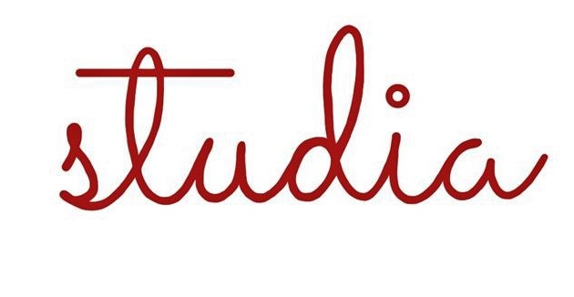

Home
ETH-Zürich
Uni-Basel
Uni-Bern
ZHAW
Uni-St.Gallen
FH-Graubünden
DARK/LIGHT
Studien-Informationsanlässe der Schweiz
Herzlich Willkommen auf der Webseite studia.
Hier findest du Informationen zu einigen Anlässe über Studiengänge der ganzen Schweiz.
Die Angebote von einigen Universitäten und Fachhochschulen sind hier auf einen Blick ersichtbar.
Viel Erfolg bei der Studiensuche!
ETH-Zürich
Am 7.& 8. September 2022 finden Informationstage statt, die das ganze Studienangebot der ETH auf einen Blick zeigen. Der Anlass findet an der ETH in Zürich statt. Es ist eine Anmeldung Notwendig, diese ist erst ab Ende April möglich:
Hier Anmelden!
Vom 7.-11. Juni 2022 findet vor Ort eine Studienwoche für Gymnasiastinnen und Gymnasiasten statt. Diese behandelt die Fächer: Biologie, Elektrotechnik und Maschinenbau , Materialwissenschaft, Mathematik , Physik, Umweltingenieurwissenschaften.
Hier Anmelden!
Universität Basel
Die Universität in Basel bietet einen online Infotag am 22.November an. Alle Studienfächer, welche die Uni-Basel anbietet werden vorgestellt. Für den Info-Anlass ist eine Anmeldung notwendig, diese ist aber erst ab Ende Juni möglich.
Studienfächer von A bis Z
der Universität Basel und
weitere Informationen.
Uni-Bern
Der Digitale MINT-Tag findet am 11. April 2022 statt. Er ist für alle Mittelschüler*innen ab 16 Jahren. Am Digitalen MINT-Tag erfährst du mehr über die Studiengänge: Chemie/Biochemie, Geologie, Informatik, Mathematik und Physik. Weitere Informationen und das Anmeldeformular findest du
hier!
Zürcher Hochschule für angewandte Wissenschaften
Die ZHAW bietet im Jahr 2022 verschiedenste Online Informations-Anlässe an. Für diese muss man sich Anmelden. Die Informationen finden Sie, wenn Sie
hier
klicken.
Die ZHAW bietet aber auch Anlässe vor Ort an. Infotage finden am Samstag, 12. März 2022 & 26. März 2022 statt. Aviatik, Data Science, Elektrotechnik, Energie- und Umwelttechnik, Informatik, Maschinentechnik, Systemtechnik, Verkehrssysteme und Wirtschafts- ingenieurwesen sind Gebiete die man an diesen Tagen vertiefen kann.
Anmeldung & und weiter Informationen
Universität St.Gallen
Die Universität in St.Gallen bietet im Jahr 2022 über 60 verschiedene Info-Anlässe zu Studiengängen an. Alle Studienfächer, welche die Uni St.Gallen anbietet sind dabei. Die genauen Infoanlässe und Anmeldeforumlare findest du
hier.
Fachhoschule Graubünden
Die Fachhochschule Graubünden bietet zwei Online Infoabende an. Am 16. März 2022 über die Bachelorstudienangebote Technik und Architektur. Und am 17. März 2022 über die Bachelor- und Masterstudienangebote in Wirtschaft, Dienstleistung und Informationswissenschaft. Für beide Anlässe sind Anmeldungen notwendig. Jetzt
hier Anmelden!
Es gibt aber auch einen Infotag vor Ort an der FH Graubünden. Dieser findet am 02. April 2022 statt und beinhaltet Informationen zu allen Bachelor- und Masterstudiengängen, welche die FH Graubünden anbietet.
Infos & Anmeldeformular